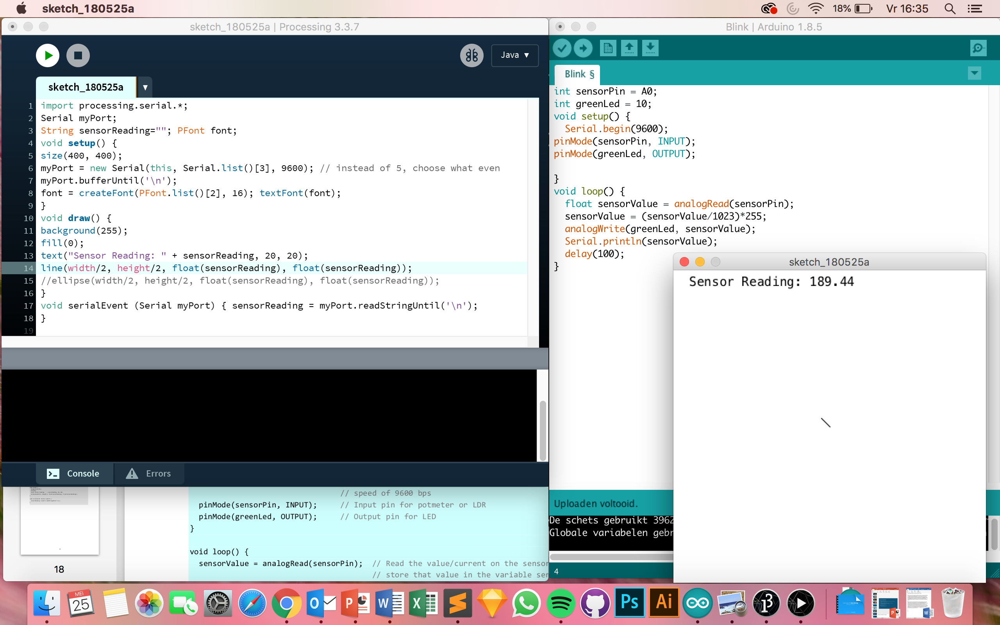

Bij deze opdracht heb ik gebruik gemaakt van twee ledlichtjes, twee resitors en vier jumper wires. Door het korte pootje van het ledlichtje op dezelfde rij te plaatsen als de jumping wire gaat het lampje branden. Door de andere uiteinden van de jumping wire in een gat in het arduino bord te te pluggen op een getal, kan je deze gebruiken in je code in arduino. In de code heb ik dus een pinMode 12 en 13. 13 geeft het groene lichtje aan en 12 de gele lichtje. Met de digitalWrite high kan je aangeven hoelang het lichtje aan staat en digitalWrite low staat voor hoelang het lichtje uit staat. Door de delay waarde aan te passen kan je bepalen hoe snel het lichtje aan en uit gaat. De delay van 13, het groene lichtje dus, heb ik op 500 gezet en de delay van 12, dus geel, op 1000 zodat het groene lichtje twee keer zo snel knippert. Hoe lager het getal hoe sneller het lampje aan en uit gaat.
Bij deze opdracht heb ik weer gebruik van dezelfde onderdelen als bij opdracht 3c alleen zijn de uiteinden van de jumper wires verplaatst van 12 en 13 naar 19 en 10. Vervolgens heb ik een interger aangemaakt met de getallen 9 en 10. 9 geeft het gele lichtje aan en 10 het groene lichtje. Daarnaast heb ik een for-loop aangemaakt waarin ik de brightness van deze twee lichtjes kan bepalen. Bij het groene licht wordt er telkens 1 bij opgeteld zodat het feller wordt (brightness++) en bij het gele licht wordt er steeds 1 vanaf getrokken zodat het minder fel wordt (255-brightness). De loop gaat van 0 tot 256 wat zorgt voor de felheid van het licht.
Bij deze opdracht heb ik weer gebruik gemaakt van dezelfde onderdelen als bij de vorige opdracht, alleen heb ik een potentiometer en drie jumper wires toegevoegd. Bij deze opdracht was het de bedoeling dat wanneer je aan de potentiometer draaide, het ene lichtje feller werd en het andere lichtje minder fel werd. De drie toegevoegde snoertjes zitten op dezelfde lijn als de potentiometer in het bord. De meter zorgt ervoor dat je het licht van de lampjes kan dimmen wanneer je eraan draait. De getalen van het dimlicht kunnen variëren van 0 tot 1023. De lichtjes werken met een getal tussen de 0 en 255. Ik heb twee float's aangemaakt die ik mapper1 (groen) en mapper2 (geel) heb genoemd. Ik heb vervolgens waardes aan het ledlampje toegevoegd waardoor de ene dimt als de ander feller wordt.
Bij deze opdracht heb ik gebruik gemaakt van dezelfde onderdelen als bij de vorige opdracht, alleen heb ik de potentiometer vervangen voor een sensor en een wire jumper verwijderd en een resistor toegevoegd. Deze keer een bruin, zwart, zwart, rood, bruin. Bij deze opdracht was het de bedoeling dat het ene lampje zou dimmen wanneer de ander feller wordt door middel van de lichtsensor te gebruiken en te spelen met licht en donker. In het filmpje is dit goed te zien doordat de sensor wordt afgedekt met een vinger om de lichtdoorval te stoppen. Ik heb de waardes van de sensorValue bepaald door het te testen bij 'Serial monitor'. Vervolgens heb ik deze waarde ook in de mapper1 en mapper2 gezet.
Bij deze opdracht heb ik gebruik gemaakt van dezelfde onderdelen als bij de vorige, alleen heb ik nu Arduino gecombineerd met Processing. Ik heb de aangeboden code uit de opdracht voor Processing zo veranderd dat er een lijn is te zien die bij het vangen van veel licht door de sensor kort is en bij het vangen van weinig licht langer. In het filmpje is dit goed te zien.
